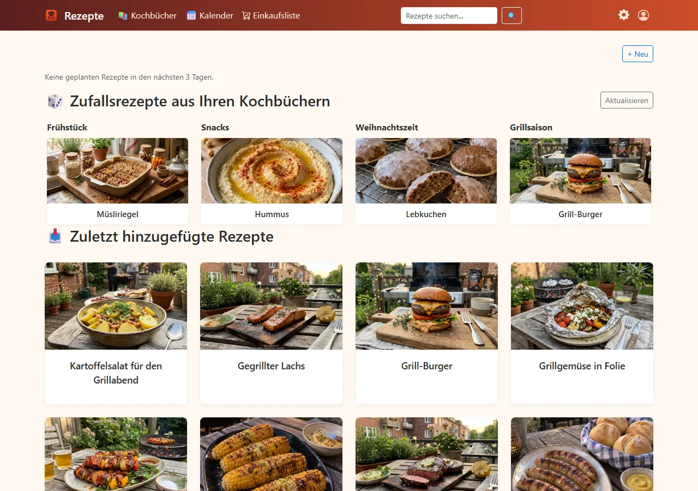

Kochbücher & Rezepte
Kochbücher mit Sortierung und Detailseiten; Rezepte mit Zutaten, Zubereitungsschritten, Bildern und Beilagen.
Rezepte ist eine deutschsprachige Webanwendung zur Verwaltung von Kochbüchern, Rezepten, Bildern und geplanten Mahlzeiten – mit Einkaufsliste, Kalender und optionalen KI-gestützten Importfunktionen.

Alles rund um die eigene Rezeptsammlung – vom Kochbuch bis zur Einkaufsliste.
Kochbücher mit Sortierung und Detailseiten; Rezepte mit Zutaten, Zubereitungsschritten, Bildern und Beilagen.
Einzelne Rezepte per zeitlich begrenztem Link teilen – anonyme Nur-Lesen-Ansicht ganz ohne Konto.
Mahlzeiten im Kalender planen, Rezepte suchen und die Einkaufsliste direkt aus den geplanten Gerichten füllen.
Rezepte aus Backups, Dateien, URLs und unterstützten Webseiten importieren – inklusive interaktiver Import-Sessions.
Erweiterbares Plugin-Framework für Rezeptimporte mit optionalen KI-gestützten Importen aus URLs und Fotos.
Export- und Sicherungsfunktionen für die eigene Sammlung sowie eingebaute Programmupdates.
Ein Blick in die Anwendung – aufgenommen nach einer Erstregistrierung mit Demodaten.



Die aktuellen Releases stehen auf GitHub bereit. Jedes Release enthält fertige Pakete
für Windows (release-win-x64.zip) und Linux (release-linux-x64.zip).
Neuestes Release Alle Releases
Zur Einrichtung siehe die Installationsanleitung.
Ausführliche Informationen zu Funktionen, Installation und Betrieb: